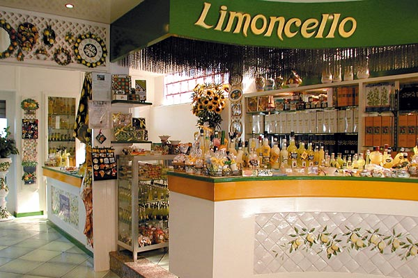
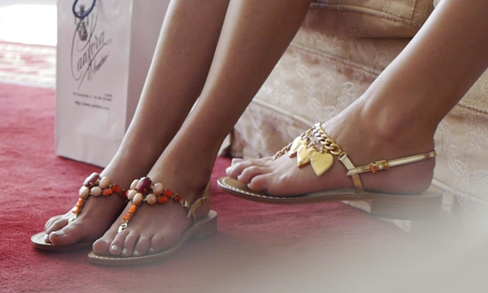
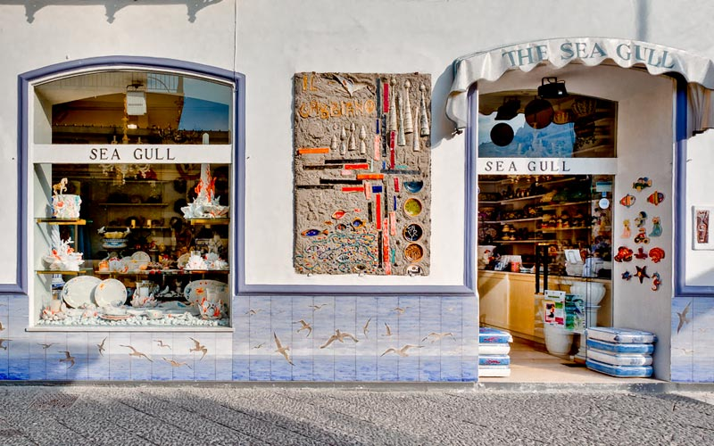
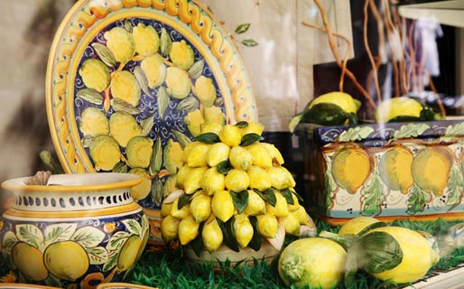

旅の思い出に…
Limoncello di Capri
カプリ産、ソレント産から厳選された高品質で形の良いレモンのみを使用したお酒です。場所や用途を選ばないので好きなときに好きなように上品なレモンの香りを楽しめます。
Canfora
1946年からあるサンダル屋。作っているサンダルはすべてハンドメイドで、材料には本革が使われていてその種類は何百にものぼります。質、見た目ともにとても優れてるため履いたらよりリゾート感が感じられること間違いありません！
The Sea Gull
カプリ島内一有名な陶器のお店です。60年以上の長い歴史があり、カプリ島らしいデザインが人気を集めています。数々のイタリアのアーティストがデザインを手掛けていて、旅の思い出にぴったりな品物です。
L'Oasi Ceramiche
小さな小物から大皿までたくさんの種類の陶器が売っているお店です。普段使える便利なものやおしゃれな食器が並んでいるのでちょっとしたお土産、普段の食卓を華やかにしたい方におすすめです。
Basic Information
- Country: Italy
- Location: Tyrrhenian Sea
- Average Highest Temperature: 22℃
- Population: 12,200
- Area: 10.4㎢
- Average Lowest Temperature: 12℃